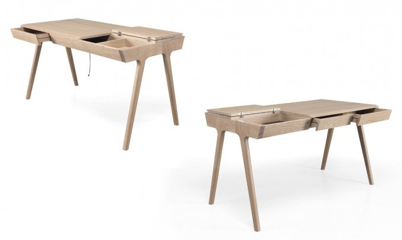
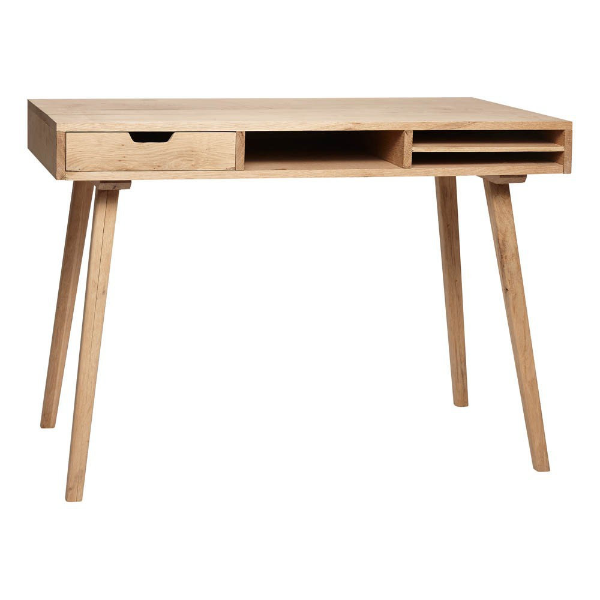
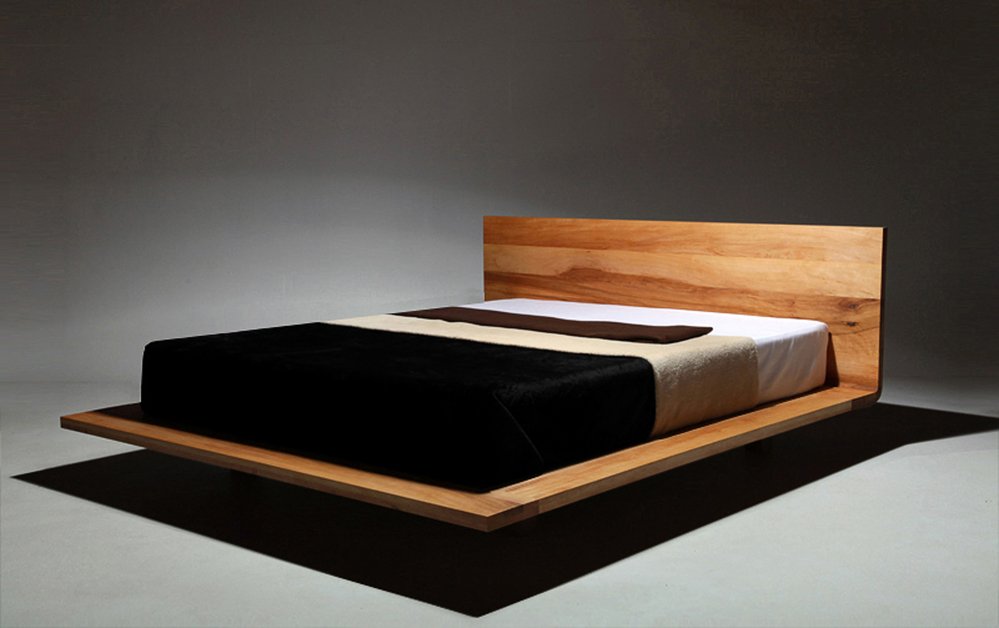
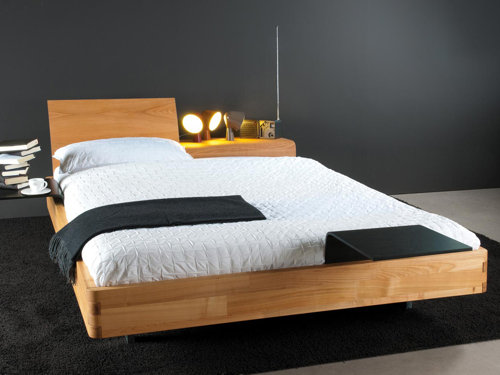
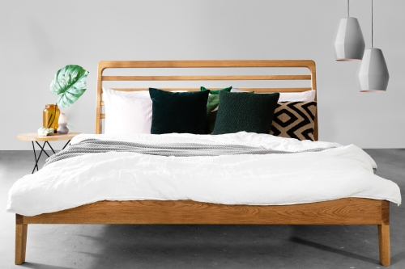
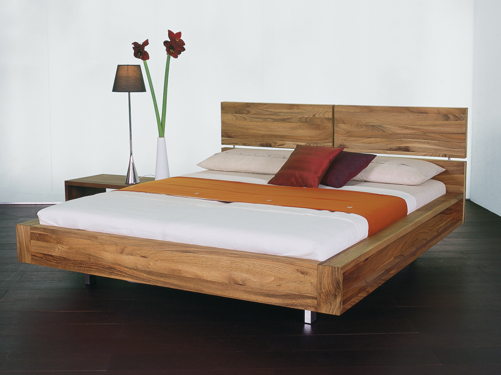
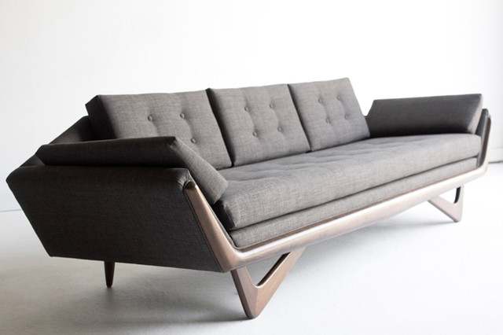
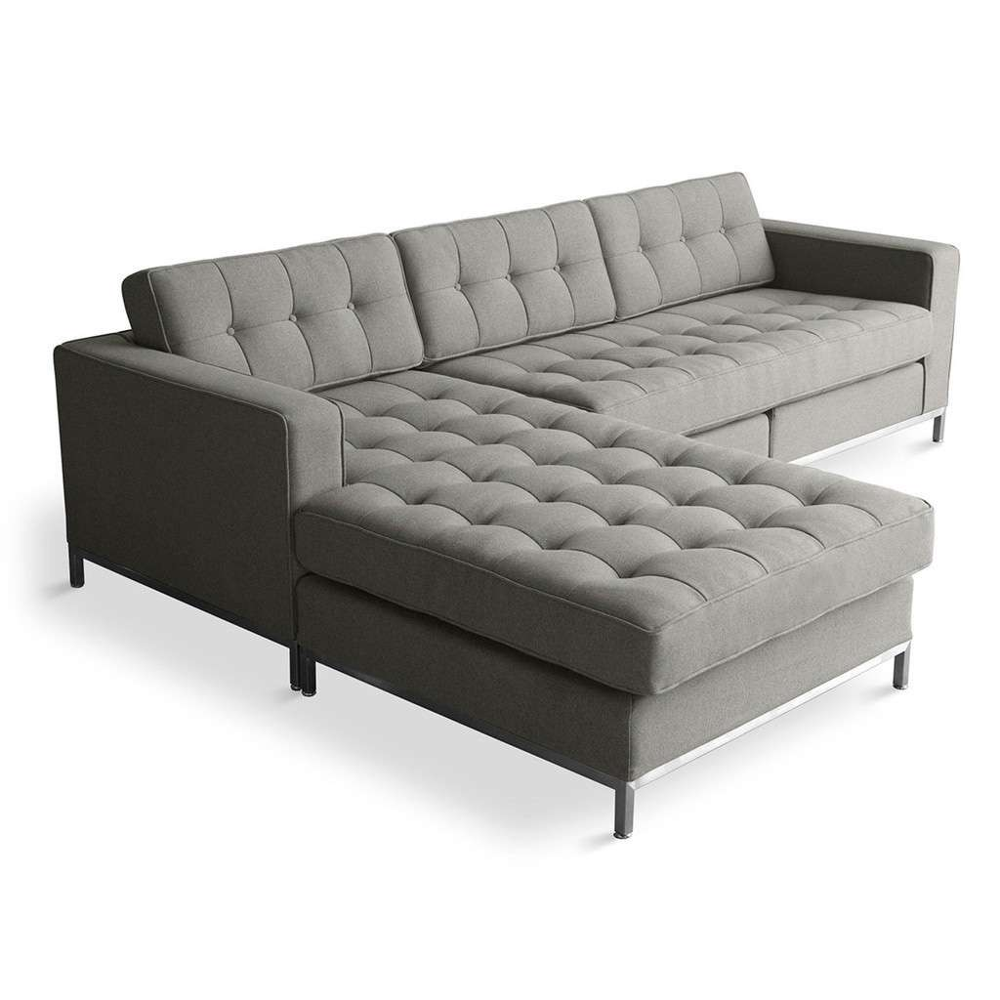
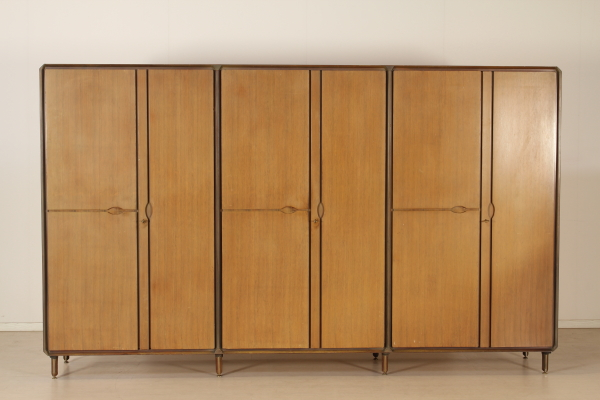

Biurko Art wykonane jest ze szlachetnego drewna sosny. Posiada oryginalne skrzyżowane nogi oraz dodatkowe przedziałki na dokumenty i akcesoria biurowe. Blat biurka jest koloru matowej szarości.
Cena: 899zł

Biurko Oryginal
Biurko Original wykonane jest ze szlachetnego drewna sosny. W swoim blacie posiada skrytkę na ważne dokumenty oraz przedmioty biurowe. Oprócz tego posiada dwie szuflady.
Cena: 1050zł

Burko Classic Desk
Biurko Classic Desk wykonane jest ze szlachetnego drewna sosny. Posiada trzy przegródki- pierwsza posiada szufladę, a ostatnia podzielona została na dwie osobne półki na papiery.
Cena: 500zł
Łóżka

Łóżko Magnum
Dwuosobowe łóżko, zrobione z drewna wiśniowego. Dzięki swojej oryginalnej podstawie wydaje się być zawieszonym w powietrzu.
Cena: 1800zł

Łóżko z półką
Łóżko jest zrobione z drewna sosnowego, posiada ruchome zagłówki, które mogą służyć jako półka. Łóżko to jest dwuosobowe i ma możliwość regulacji wysokości.
Cena: 1500zł

Łóżko Espania
Łóżko wykonane jest z drewna sosnowego. Jest to łóżko jednoosobowe, z wysokim zagłówkiem.
Cena: 1200zł

Łóżko Emma
Łóżko to wykonane jest z drzewa akacjowego, który decyduje o jego oryginalnym charakterze. Posiada boczne zdobienia, które mogą mieć charakter dekoracyjny wedle uznania właścicieli. Posiada wysoki zagłówek, który składa się z czterech płyt. Jest to łóżko dwuosobowe.
Cena: 1499zł

Sofa Delux
Sofa projketu Joanny Olkuszyńskiej. Swoim charakterem przypomina klimat lat 60tych, ale w nowoczesnym wydaniu. Jest to sofa trzyosobowa, nierozkładania.
Cena: 2099zł

Sofa Family
Sofa family jest sofą 4-6 osobową. Osobna część sofy-podnóżek-dołączony jest w zestawie. Podnóżek posiada skrytkę. Sofa jest nierozkładana, z metalowymi nóżkami. Nie istnieje możliwość zakupu sofy bez jej dodatkowego elementu. Cena obejmuje zestaw.
Cena: 2500zł

Szafa 80'
Szafa jest imitacją mebli lat 80tych. Szafa zawiera trzy segmenty, w tym przedział z półkami, miejsce na wieszaki oraz przestrzeń na większe przedmioty np. walizki.